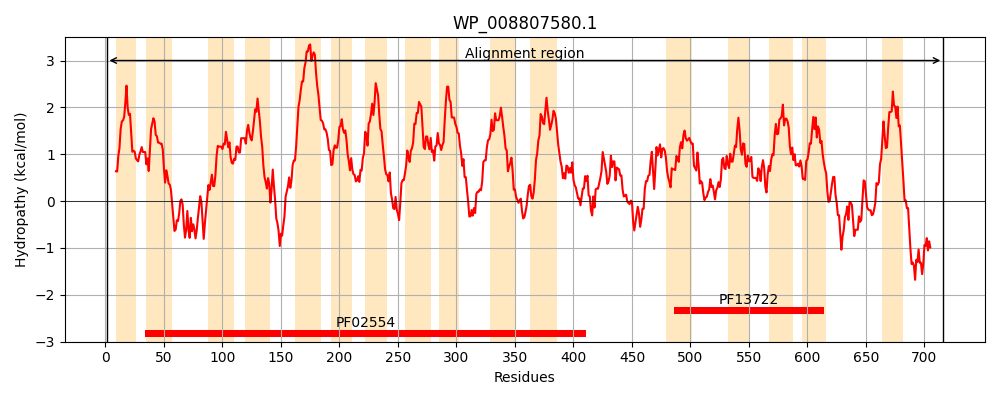
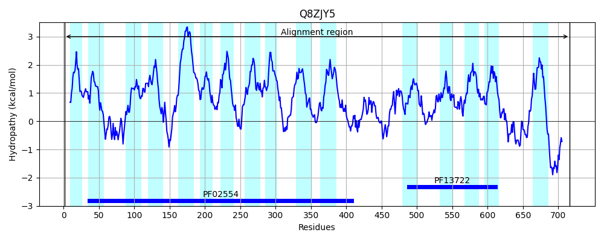
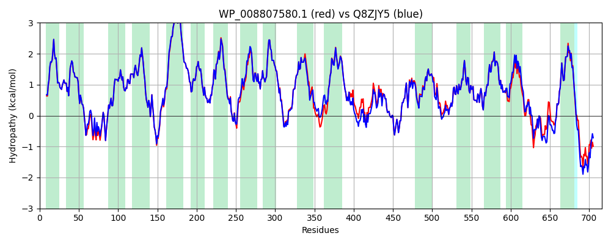

Hit Accession: Q8ZJY5
Hit TCID: 2.A.114.1.10
Hit Description: gnl|BL_ORD_ID|17120 gnl|TC-DB|Q8ZJY5|2.A.114.1.10 Putative carbon starvation protein OS=Salmonella typhimurium (strain LT2 / SGSC1412 / ATCC 700720) GN=yjiY PE=4 SV=1
Mach Len: 716
e:0.000000
Query TMS Count : 16
Hit TMS Count: 16
TMS-Overlap Score: 17.050000
Predicted Substrates:None
BLAST Alignment:
Score: 3506 , Bit scores: 1355 bits, E-value: 0.0e+00, Alignment length: 716, Percentage identity: 94
Query: 1 MDTKKLFKHIPWVILGIIGAFCLSVVALRRGEHVSALWIVVASVSVYLVAYRYYSLYIAQKVMKLDPTRSTPAVINNDGLNYVPTNRYVLFGHHFAAIAGAGPLVGPVLAAQMGYLPGTLWLLAGVVLAGAVQDFMVLFISSRRNGASLGEMIKQEMGPVPGSIALFGCFLIMIIILAVLALIVVKALAESPWGVFTVCSTVPIALFMGIYMRFLRPGRVGEVSVIGIVLLVASIWFGGIIAHDPYWGPALTFKDTTITFTLIGYAFISALLPVWLILAPRDYLATFLKIGVIVGLALGIVILNPDLKMPAVTQYIDGTGPLWKGALFPFLFITIACGAVSGFHALIASGTTPKLLANETDARFIGYGAMLMESFVAIMALVAASIIEPGLYFAMNTPPAGLGIVMPNLHEMGGENAAMIAAQLKEVTVHAAATVSSWGFVISPEQILQTAKDIGEPSVLNRAGGAPTLAVGIAHVFHKIIPMADMGFWYHFGILFEALFILTALDAGTRAGRFMLQDLLGNFVPFLKKTDSLVAGIIGTAGCVGLWGYLLYQGVVDPLGGVKSLWPLFGISNQMLAAVALVLGTVVLVKMQRTKYIWVTVIPAAWLLLCTTWALGLKLFSSNPQMEGFFFMAQQYKEKIAAGGELTAQQIANMNHIVVNNYTNAGLSILFLVVVYSIIFYGIKTWLNVRNNKVRTDKETPYVPVPEGGVKTSSHH 716
MDTKK+FKHIPWVILGIIGAFCLSVVALRRGEHVSALWIVVASVSVYLVAYRYYSLYIAQKVMKLDPTR+TPAVINNDGLNYVPTNRYVLFGHHFAAIAGAGPLVGPVLAAQMGYLPGTLWLLAGVVLAGAVQDFMVLFISSRRNGASLGEMIK+EMG VPG+IALFGCFLIMIIILAVLALIVVKALAESPWGVFTVCSTVPIALFMGIYMRFLRPGRVGEVSVIGIVLLVASI+FGG+IAHDPYWGPALTFKDTTITF LIGYAF+SALLPVWLILAPRDYLATFLKIGVIVGLALGIVILNP+LKMPA+TQY+DGTGPLWKGALFPFLFITIACGAVSGFHALI+SGTTPKLLA ETDARFIGYGAMLMESFVA+MALVAASIIEPGLYFAMNTPPAGLGI MPNLHEMGGENA +I AQLK+VT HAAATVSSWGFVISPEQILQTAKDIGEPSVLNRAGGAPTLAVGIAHVFHK++PMADMGFWYHFGILFEALFILTALDAGTR+GRFMLQDLLGNFVPFLKKTDSLVAGIIGTAGCVGLWGYLLYQGVVDPLGGVKSLWPLFGISNQMLAAVALVL TVVL+KMQRTKYIWVTVIPA WLL+CTTWALGLKLFS+NPQMEGFF+MA YKEKIA G LT QQIANMNHIVVNNYTNAGLSILFLVVVYSIIFYG TW+ VRN+ RTDKETPYVPVPEGGVK SSHH
Sbjct: 1 MDTKKIFKHIPWVILGIIGAFCLSVVALRRGEHVSALWIVVASVSVYLVAYRYYSLYIAQKVMKLDPTRATPAVINNDGLNYVPTNRYVLFGHHFAAIAGAGPLVGPVLAAQMGYLPGTLWLLAGVVLAGAVQDFMVLFISSRRNGASLGEMIKEEMGTVPGTIALFGCFLIMIIILAVLALIVVKALAESPWGVFTVCSTVPIALFMGIYMRFLRPGRVGEVSVIGIVLLVASIYFGGVIAHDPYWGPALTFKDTTITFALIGYAFVSALLPVWLILAPRDYLATFLKIGVIVGLALGIVILNPELKMPALTQYVDGTGPLWKGALFPFLFITIACGAVSGFHALISSGTTPKLLACETDARFIGYGAMLMESFVAVMALVAASIIEPGLYFAMNTPPAGLGITMPNLHEMGGENAPLIMAQLKDVTAHAAATVSSWGFVISPEQILQTAKDIGEPSVLNRAGGAPTLAVGIAHVFHKVLPMADMGFWYHFGILFEALFILTALDAGTRSGRFMLQDLLGNFVPFLKKTDSLVAGIIGTAGCVGLWGYLLYQGVVDPLGGVKSLWPLFGISNQMLAAVALVLSTVVLIKMQRTKYIWVTVIPAVWLLICTTWALGLKLFSANPQMEGFFYMANLYKEKIANGANLTEQQIANMNHIVVNNYTNAGLSILFLVVVYSIIFYGFTTWMKVRNSDKRTDKETPYVPVPEGGVKISSHH 716 | Protein Hydropathy Plots: |
|---|
|  |  |
Pairwise Alignment-Hydropathy Plot:
|
|---|
|  |